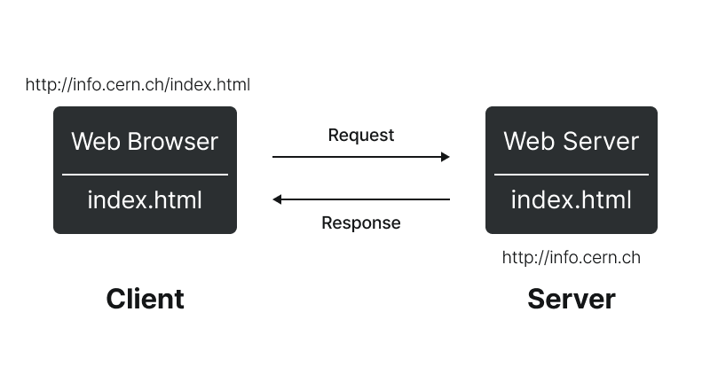
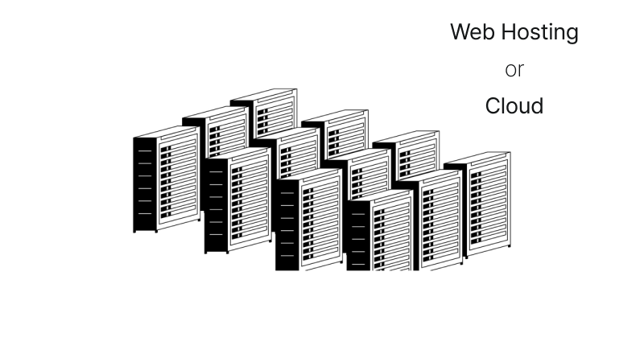

직접 웹서버를 운영하는 일은 쉽지 않은 일입니다.
우선 컴퓨터가 있어야 하고요,
컴퓨터가 냉장고처럼 항상 켜져 있어야 합니다.
웹서버라는 프로그램을 배워서 설치해야 합니다.
또 인터넷을 통해서
외부로 정보를 전송할 수 있게
설정을 해야 합니다.
쉽지 않습니다.
그래서
이런 일을 대행해 주는 회사들이 있습니다.
인터넷에 연결된 컴퓨터 하나 하나를 호스트라고 합니다.
이런 컴퓨터를 빌려주는 사업을 호스팅 또는 클라우드라고 합니다.
웹서버를 전문적으로 빌려주는 비즈니스를
웹호스팅 업체라고 부릅니다.
